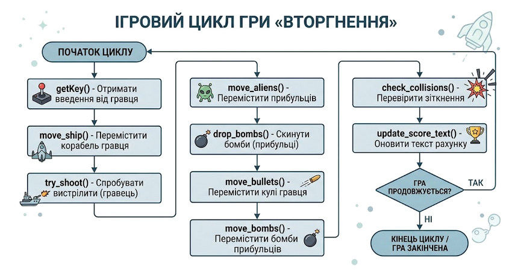
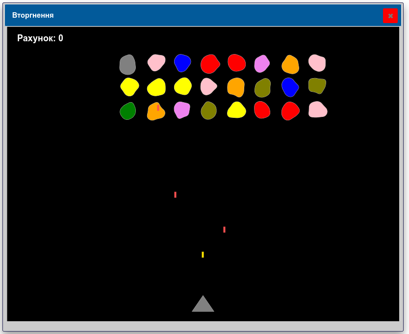

До цього ми навчилися малювати статичні зображення. Але комп'ютери вміють не просто малювати, а й "оживляти" наші малюнки. У цьому розділі ми дізнаємося, як створювати анімацію за допомогою бібліотеки SimpleGraphics.
Анімація (від лат. anima — душа, життєва сила) — це процес створення ілюзії руху або зміни стану нерухомих об'єктів. Коли ми дивимося мультфільми, нам здається, що персонажі рухаються самі по собі. Насправді ж комп'ютер або художник просто дуже швидко показують нам багато окремих картинок.
Ілюзія руху виникає завдяки особливості людського ока — інерції зору. Якщо показувати послідовність картинок (кадрів) з достатньою швидкістю (зазвичай від 15 до 60 картинок за секунду), наш мозок об'єднує їх у суцільний плавний рух.
Види комп'ютерної анімації
У 2D-анімації всі об'єкти "плоскі". Вони існують на екрані, який є прямокутником. Щоб керувати об'єктами, ми використовуємо систему координат.
Анімація — це ілюзія руху, яку людський мозок «домальовує» сам, коли бачить серію злегка різних картинок, що змінюють одна одну досить швидко (зазвичай 20–60 разів на секунду). Кожна окрема картинка називається кадром (англ. frame).
Секрет будь-якої комп'ютерної анімації простий:
Що частіше ми повторюємо ці кроки — то плавнішим здається рух. Саме так працює будь-яке відео, мультфільм чи комп'ютерна гра.
Щоб об'єкт "ожив", ми можемо змінювати його параметри від кадру до кадру:
У
SimpleGraphicsуже є готовий інструмент саме для цього — функціяdoAnimate(). Їй достатньо передати функцію, яка малює/пересуває один кадр, і бібліотека сама викликатиме її знову й знову через рівні проміжки часу — доки ви не скажете зупинитися. Саме цю функцію (разом ізnoAnimate(),isAnimate()таanimationTime()) ми й розглянемо в цьому розділі.
Кадр — це одна окрема картинка в послідовності анімації. Щоб створити рух, програма повинна постійно оновлювати ці кадри.
Щоб анімація працювала, комп'ютер виконує один і той самий алгоритм (цикл) знову і знову:
Частота кадрів вимірюється в FPS (Frames Per Second — кадри за секунду).
Бібліотека SimpleGraphics бере на себе всю роботу з організації циклу анімації. Нам не потрібно писати нескінченні цикли while True, які можуть "заморозити" вікно програми.
doAnimate()Функція doAnimate(ім'я_функції) запускає анімацію. Вона викликатиме вашу функцію автоматично через рівні проміжки часу, поки ви не зупините її:
from SimpleGraphics import *
def kadr():
# тут ми оновлюємо стан об'єктів і перемальовуємо кадр
pass
doAnimate(kadr)
Розглянемо приклад детальніше:
kadr() — вона не приймає жодних аргументів і містить лише код одного кадру (пересунути об'єкт, змінити його розмір тощо).doAnimate(kadr) не запускає нескінченний цикл прямо тут і не блокує програму — він лише реєструє функцію kadr як «функцію анімації» й одразу повертає керування далі. Сама ж бібліотека потім самостійно викликає kadr() кожні animationTime() мілісекунд (за замовчуванням — кожні 50 мс, тобто 20 кадрів на секунду).Важливо. Саме тому виклик
doAnimate(kadr)зазвичай можна зробити останнім рядком скрипту. Коли програма Python доходить до кінця,SimpleGraphicsавтоматично бере на себе підтримку вікна — і саме в цей момент починають реально «цокати» заплановані викликиkadr(), а вікно продовжує реагувати на рух миші та на закриття. Вам не потрібно писатиwhile not closed(): ...— бібліотека сама подбає про це, поки ви не закриєте вікно або не викличетеnoAnimate().
Є один нюанс, про який обов'язково потрібно пам'ятати — властивості об'єкта, що анімується(позиції x, y, тощо), оголошуємо глобально, а їх зміну, як правило, здійснюємо у функції, якою керує doAnimate() .
Погляньмо, що станеться, якщо про це забути:
from SimpleGraphics import *
x = 0
setFill("cornflowerblue")
kvadrat = rect(x, 280, 60, 60)
def kadr():
x += 4 # ПОМИЛКА! UnboundLocalError
move(kvadrat, x, 280)
doAnimate(kadr)
Цей код одразу «впаде» з помилкою UnboundLocalError: local variable 'x' referenced before assignment. Python бачить, що всередині kadr() є рядок x += 4 (тобто присвоєння x), і тому вирішує, що x — локальна змінна цієї функції. А оскільки локальної x ще не існує на момент виконання x += 4, стається помилка.
Виправляється це одним словом — global на початку функції:
from simplegraphics import *
x = 0
setFill("cornflowerblue")
kvadrat = rect(x, 280, 60, 60)
def kadr():
global x # тепер x усередині функції — це та сама x, що й зовні
x += 4
move(kvadrat, x, 280)
doAnimate(kadr)
global імʼя_змінної потрібна лише для тих змінних, які функція змінює (тобто присвоює їм нове значення: x += 4, kut = 0, indeks = ... тощо). Змінні, які функція лише читає (наприклад, передає в move() чи використовує в умові), у global не потребують. Надалі в кожному прикладі цього розділу перший рядок функції kadr() буде списком саме тих змінних, яких це стосується.
Ви маєте створити функцію, яка міститиме логіку одного кадру (зміну координат, перемалювання).
Важливо: всередині цієї функції не можна використовувати while або sleep(), інакше анімація зависне!
animationTime()Щоб змінити швидкість анімації, використовуйте функцію animationTime(час_у_мілісекундах).
animationTime(100) — сповільнити анімацію (пауза 100 мс між кадрами).animationTime(20) — пришвидшити анімацію (пауза 20 мс).Функція animationTime(мілісекунди) встановлює затримку між кадрами — в мілісекундах, а не в секундах! За замовчуванням це 50 мс (20 кадрів на секунду). Хочете плавнішу й швидшу анімацію — зменшіть значення (наприклад, animationTime(20) дає приблизно 50 кадрів на секунду); хочете уповільнити рух — збільшіть його (наприклад, animationTime(200)).
animationTime(20) # тепер кадри змінюються кожні 20 мс (≈50 разів/секунду)
Якщо викликати animationTime() без аргументів, вона поверне поточне значення затримки — це зручно, коли потрібно, наприклад, тимчасово пришвидшити гру, а потім повернути початкову швидкість.
doAnimate(func) — запускає цикл анімації.noAnimate() — зупиняє анімацію.isAnimate() — повертає True, якщо анімація зараз працює, і False, якщо зупинена.Вказівка noAnimate() зупиняє цикл анімації, запущений doAnimate(). Викликати її можна звідки завгодно — зокрема, з середини самої функції kadr() (наприклад, коли гравець програв).
Функція isAnimate() повертає True, якщо анімація зараз запущена (тобто doAnimate() викликали, а noAnimate() — ще ні), і False — в іншому випадку.
Повторний виклик doAnimate(), поки попередня анімація ще працює, ігнорується — це зроблено навмисно, щоб випадково не запустити дві копії циклу одночасно (тоді кадри оновлювалися б удвічі швидше, ніж ви очікуєте). Якщо потрібно замінити функцію анімації на іншу, спочатку викличте noAnimate(), а тоді вже doAnimate(нова_функція).
Щоб керувати об'єктом, потрібно "запам'ятати" його. Коли ви створюєте фігуру, функція повертає її унікальний ідентифікатор (ID).
У SimpleGraphics створення будь-якого графічного об'єкта (лінії, кола, прямокутника, тексту) повертає його числовий ідентифікатор (ID). Цей ID є посиланням на конкретний об'єкт на Canvas і є критично важливим для подальшого керування ним.
Бібліотека пропонує широкий набір функцій для створення примітивів, наприклад:
line(x1, y1, x2, y2) — відрізок.rect(x, y, w, h) — прямокутник.circle(x, y, d) — коло із заданим діаметром.text(x, y, "текст") — текстовий напис.drawImage(img, x, y) — відображення растрового зображення.Важливо для анімації: Створення об'єктів має відбуватися до запуску doAnimate(). Якщо створювати об'єкти всередині функції кадру, вони будуть накопичуватися у пам'яті кожні кілька мілісекунд, що призведе до падіння продуктивності програми ("витоку пам'яті").
# Зберігаємо ID кола у змінну ball
ball = circle(50, 50, 40)
move()Функція move(obj, x, y) переміщує об'єкт obj у нові абсолютні координати (x, y).
Почнімо з фігури, яка рухається сама, без жодного втручання користувача. Малюємо квадрат один раз перед реєстрацією анімації, а сама функція kadr() лише змінює його координати та викликає move():
from SimpleGraphics import *
x, y = 0, 280
krok = 4
setFill("cornflowerblue")
kvadrat = rect(x, y, 60, 60)
def kadr():
global x
x += krok
move(kvadrat, x, y)
doAnimate(kadr)
Як це працює:
kadr() ми більше ніколи не викликаємо rect() — лише пересуваємо вже намальований об'єкт.x зберігає поточну горизонтальну позицію квадрата. Оскільки kadr() її змінює (x += krok), на початку функції обов'язково стоїть global x.x додається krok (4 пікселі), і нове значення одразу передається в move().move(obj, x, y) пересуває об'єкт у конкретну точку (x, y), а не зсуває його на (x, y) пікселів відносно поточного положення! Саме тому ми зберігаємо повну позицію об'єкта в змінних x, y і щоразу обчислюємо нову абсолютну координату, перш ніж викликати move(). У класичному Tkinter метод .move(id, dx, dy) приймає зсув (на скільки пікселів перемістити від поточного положення), проте в SimpleGraphics функція реалізована так, що вона переміщує об'єкт у **абсолютні координати
Той самий принцип працює для зображень — адже drawImage(), як і rect(), повертає ідентифікатор об'єкта, яким потім керує move():
# ruh_kachky.py
from simplegraphics import *
x, y = 0, 250
krok = 3
zobrazhennia = loadImage("duck.png")
kachka = drawImage(zobrazhennia, x, y)
def kadr():
global x
x += krok
move(kachka, x, y)
doAnimate(kadr)
Качка плавно пропливає зліва направо через усе вікно. Зверніть увагу: drawImage(), як і move(), використовує лівий верхній кут зображення як точку прив'язки — тож координати збігаються без жодних додаткових перетворень.
Якщо ви хочете видалити об'єкт або повністю очистити сцену:
delete(obj) — видаляє конкретний об'єкт.clear() — очищує весь екран (малює новий фон). Після цього об'єкти потрібно створювати заново.itemConfig(obj, fill="red") — змінює колір заповнення об'єкта на червоний.scale(obj, xs, ys) — змінює розмір об'єкта (розтягує або стискає).x і y).global усередині спільної функції kadr().
scale()Крім переміщення, SimpleGraphics дозволяє змінювати розмір уже намальованого об'єкта функцією scale(obj, xs, ys), де xs та ys — коефіцієнти масштабування по осі X та Y відповідно (1.0 залишає розмір без змін, > 1.0 — збільшує, < 1.0 — зменшує).
Зробімо коло, яке «дихає» — плавно збільшується, а потім зменшується:
from SimpleGraphics import *
setFill("mediumseagreen")
kolo = circle(400, 300, 40)
lichylnyk = 0
zbilshuietsia = True
def kadr():
global lichylnyk, zbilshuietsia
if zbilshuietsia:
scale(kolo, 1.03, 1.03)
else:
scale(kolo, 0.97, 0.97)
lichylnyk += 1
if lichylnyk % 40 == 0: # Кожні 40 кадрів міняємо напрямок
zbilshuietsia = not zbilshuietsia
doAnimate(kadr)
Як це працює:
scale() множить поточний розмір об'єкта на заданий коефіцієнт — ефект накопичується з кадру в кадр, тому навіть маленьке значення (1.03) поступово дає помітний ріст.zbilshuietsia (за зразком dx = -dx з попередніх прикладів) визначає, ростемо ми чи зменшуємось. Лічильник lichylnyk перемикає цей прапорець кожні 40 кадрів, створюючи ефект пульсації. Обидві змінні змінюються всередині kadr(), тож обидві йдуть у global.scale() масштабує об'єкт відносно першої координатної точки його форми (по суті — лівого верхнього кута обмежувальної рамки), а не відносно центра фігури. Через це коло з прикладу вище не «дихатиме» строго на місці: під час росту воно буде трохи зсуватися вниз-вправо, а під час зменшення — «повертатися» назад. Ефект непомітний при малих коефіцієнтах (1.03/0.97) та невеликій кількості кадрів, але накопичується з часом. Якщо потрібне справді симетричне масштабування навколо центра, після кожного виклику scale() можна додатково викликати move(), щоб повернути об'єкт у потрібну центральну точку.scale() добре працює з фігурами (rect, circle, ellipse, polygon...), бо в них є повноцінний список координат, який можна перерахувати. Але вона не має жодного видимого ефекту на зображеннях і тексті — у tkinter (внутрішній графічній бібліотеці, на якій побудований SimpleGraphics) зображення й текстові об'єкти мають лише одну «точку прив'язки», тож команда scale() намагається змінити масштаб відносно цієї самої точки — і фактично нічого не змінюється. Щоб «збільшити» зображення, доведеться завантажити інший файл більшого розміру або намалювати замінник іншою фігурою.А що з обертанням? У SimpleGraphics немає функції поверни-це-на-N-градусів. Для створення програми, яка обертає зображення, нам знадобляться можливості бібліотеки PIL (Python Imaging Library) та бібліотеки SimpleGraphics для відображення анімації — ми будемо використовувати PIL для обертання картинки в пам'яті. Потім ми будемо перетворювати обернене зображення у формат, зрозумілий SimpleGraphics, і відображати його на екрані. Цей процес буде повторюватися в анімаційному циклі:
from SimpleGraphics import *
from PIL import Image, ImageTk
# Завантажуємо зображення duck.png за допомогою PIL
# Переконайтеся, що файл duck.png знаходиться в тій же папці, що і цей скрипт
original_image_pil = Image.open("duck.png")
# Отримуємо розміри оригінального зображення
img_width, img_height = original_image_pil.size
# Розраховуємо центр вікна для відображення
center_x = getWidth() // 2
center_y = getHeight() // 2
# Початкові змінні стану анімації
angle = 0 # Початковий кут обертання
rotation_speed = 10 # Швидкість обертання (градусів за кадр)
current_image_obj = None # Змінна для зберігання ID графічного об'єкта SimpleGraphics
# 2. Функція одного кадру анімації
def rotate_duck():
global angle, current_image_obj
# Крок 1: Оновлюємо кут обертання
angle += rotation_speed
if angle >= 360:
angle = 0 # Скидаємо кут, якщо він досяг 360 градусів
# Крок 2: Обертаємо зображення PIL
# Параметр expand=True дозволяє зображенню розширюватися, щоб кути не обрізалися при обертанні
# Параметр resample=Image.BICUBIC покращує якість зображення при обертанні
rotated_image_pil = original_image_pil.rotate(angle, resample=Image.BICUBIC, expand=True)
# Крок 3: Перетворюємо обернене зображення PIL у PhotoImage (формат, зрозумілий SimpleGraphics)
# createImage() та loadImage() в SimpleGraphics повертають tk.PhotoImage.
rotated_photo_image = ImageTk.PhotoImage(rotated_image_pil)
# Отримуємо розміри вже оберненого зображення
new_w, new_h = rotated_image_pil.size
# Крок 4: Очищення та Рендеринг (Метод перемальовування)
# Видаляємо попереднє зображення, якщо воно було
if current_image_obj is not None:
delete(current_image_obj)
# Малюємо нове обернене зображення в центрі екрана
# drawImage повертає ID об'єкта, який ми зберігаємо
# За допомогою center_x - new_w // 2, center_y - new_h // 2 ми центруємо зображення по центру,
# оскільки drawImage за замовчуванням anchor="nw"
current_image_obj = drawImage(rotated_photo_image, center_x - new_w // 2, center_y - new_h // 2)
# 3. Налаштування часу та запуск анімації
animationTime(50)
# Запускаємо автоматичний цикл анімації
doAnimate(rotate_duck)
Як це працює:
SimpleGraphics та окремо Image з PIL. Завантаження duck.png виконується за допомогою Image.open() з PIL ще до початку анімації. Це критично для продуктивності.current_image_obj, щоб мати змогу його видалити в наступному кадрі.rotate_duck):rotation_speed.rotate() з PIL обертає оригінальне зображення на потрібний кут. Параметр expand=True гарантує, що при обертанні на кути типу 45°, краї зображення не будуть обрізані.tk.PhotoImage за допомогою ImageTk.PhotoImage.delete() ми видаляємо старе зображення, а за допомогою drawImage() малюємо нове, відцентроване на екрані.doAnimate(rotate_duck) реєструє нашу функцію та запускає автоматичний цикл, який виконується через вбудований таймер Tkinter.Уявіть мультфільм: замість того, щоб математично обчислювати нове положення кожного пера пташки, художники просто малюють кілька готових малюнків (кадрів, або спрайтів, англ. sprite) — наприклад, качку з піднятими крилами і качку з опущеними крилами — і швидко чергують їх. Це і є найпростіший спосіб «оживити» зображення, коли просте переміщення чи масштабування не підходить (політ, ходьба, моргання, вибух тощо).
У SimpleGraphics немає команди «заміни картинку в тому самому об'єкті» — кожен виклик drawImage() створює зовсім новий об'єкт із власним ідентифікатором. Тому техніка проста: видаляємо попередній кадр і малюємо наступний на тому самому місці:
from SimpleGraphics import *
kadry = [loadImage("duck1.png"), loadImage("duck2.png")]
indeks = 0
x, y = 0, 250
krok = 3
potochnyi_kadr = drawImage(kadry[indeks], x, y)
lichylnyk = 0
def kadr():
global x, indeks, potochnyi_kadr, lichylnyk
x += krok
lichylnyk += 1
if lichylnyk % 10 == 0: # Кожні 10 кадрів міняємо спрайт
indeks = (indeks + 1) % len(kadry)
delete(potochnyi_kadr)
potochnyi_kadr = drawImage(kadry[indeks], x, y)
else:
move(potochnyi_kadr, x, y)
doAnimate(kadr)
Як це працює:
kadry містить обидва зображення качки, завантажені один раз на самому початку (перезавантажувати файли на кожному кадрі було б повільно й непотрібно).potochnyi_kadr завжди зберігає ідентифікатор зображення, яке зараз відображається на екрані. Оскільки x, indeks, potochnyi_kadr і lichylnyk — усі змінюються всередині kadr(), усі чотири перелічені в global.kadr() (приблизно 2 рази на секунду при типовому animationTime() у 50 мс) ми видаляємо поточний кадр і малюємо наступний зі списку kadry, використовуючи оператор % для циклічного переходу від останнього кадру знову до першого.move() .Додайте до списку kadry третє зображення і поекспериментуйте зі швидкістю зміни кадрів (значення в lichylnyk % 10). Що відбувається, якщо зробити цю величину дуже малою (наприклад, % 2)? Дуже великою (% 100)?
Дотепер усі наші об'єкти рухалися самі — без жодного втручання користувача. Але найцікавіші анімації в іграх керує саме гравець!
Оскільки mousePos() повертає координати миші, досить просто зчитувати їх на початку кожного кадру:
from SimpleGraphics import *
zobrazhennia = loadImage("duck.png")
kachka = drawImage(zobrazhennia, 400, 300)
def kadr():
x, y = mousePos()
move(kachka, x, y)
doAnimate(kadr)
Як це працює:
mousePos()) і одразу пересуваємо туди качку.global тут не знадобився: x та y — це нові локальні змінні, які створюються заново на кожному виклику kadr() і одразу використовуються, а не «переносяться» з попереднього кадру в наступний.kadr() .Часто потрібно керувати об'єктом тільки по горизонталі (наприклад, ракеткою чи кораблем, який їздить по нижньому краю екрана), а по вертикалі він має залишатися на місці. Для цього достатньо взяти від mousePos() лише потрібну координату:
from SimpleGraphics import *
setFill("skyblue")
box = rect(400, 300, 40, 40)
def kadr():
x = mouseX()
move(box, x, 300)
doAnimate(kadr)
Як це працює:
mouseX() повертає лише горизонтальну координату курсора — саме те, що нам потрібно, оскільки y завжди залишається сталим.Змініть приклад із качкою так, щоб вона рухалася лише по вертикалі (mouseY()), залишаючись на сталій горизонтальній позиції.
Для керування об'єктом скористаємось функцією getKeys() , яка повертає множину з назв натиснутих клавіш:
from SimpleGraphics import *
background("white")
x = 400
y = 300
speed = 5
setFill("orange")
ball = circle(x, y, 40)
def kadr():
global x, y
keys = getKeys()
if "Up" in keys:
y -= speed
if "Down" in keys:
y += speed
if "Left" in keys:
x -= speed
if "Right" in keys:
x += speed
move(ball, x-20, y-20)
doAnimate(kadr)
Завважте - х та y у circle() вказують на центр кола, а в move() - верхній лівий кут прямокутника, що обмежує фігуру, тому в move() ми використовуємо move(ball, x-20, y-20), де 20 - половина діаметра.
Намалюйте коло, яке падає вниз під дією «гравітації»: на кожному кадрі трохи збільшуйте вертикальну швидкість (наприклад, додавайте 0.5 до shvydkist_y), а коли м'яч досягає низу вікна, інвертуйте швидкість і трохи зменшіть її (наприклад, помножте на 0.85), щоб імітувати втрату енергії при відскоку.
Намалюйте одну ракетку (прямокутник) біля правого краю вікна та м'яч (коло), що рухається сам, відбиваючись від верхньої, нижньої та лівої стінок. Ракетка має ходити вгору-вниз, повторюючи вертикальне положення курсора миші (mouseY(), за зразком 19.7). Якщо м'яч долітає до ракетки й потрапляє в неї (перевірте checkCollision()), він має відбитися назад; якщо проминає ракетку — гра закінчується (noAnimate()).
Використовуючи техніку з 19.5, намалюйте циферблат (коло) і одну стрілку, яка робить повний оберт за 60 «кроків» анімації (тобто кут повороту на кожному кроці дорівнює 2 * math.pi / 60).
Намалюйте прямокутник, що імітує кнопку. Поки курсор миші не над кнопкою, нехай прямокутник повільно пульсує (scale(), як у 19.4) на кожному кадрі. Щойно користувач наводить курсор на кнопку (підказка: порівняйте mousePos() із координатами прямокутника), пульсацію в цьому кадрі просто пропускайте — не викликайте scale(), поки курсор над кнопкою.
Використовуючи три кола (червоне, жовте, зелене) і зміну їхнього кольору функцією setFill() до малювання кожного кола (або малюючи наново кожне коло з потрібним кольором після delete()), відтворіть цикл роботи світлофора: червоний → жовтий → зелений → жовтий → червоний, витримуючи кожен колір по кілька секунд (порахуйте потрібну кількість кадрів, зважаючи на поточне значення animationTime()).
Об'єднаймо все, що ми вивчили в цьому розділі — керований рух, автоматичний рух, зіткнення та модуль random — у невеличку гру.
Задача «Вторгнення» Створіть гру «Вторгнення» — спрощений аналог гри Space Invaders. На екрані розташований корабель гравця, який знаходиться в нижній частині вікна. Корабель може рухатися ліворуч і праворуч за допомогою клавіш ← та →. Натискання клавіші Space дозволяє випустити ракету вгору. У верхній частині екрана знаходиться група чужинців, які постійно рухаються горизонтально. Досягнувши лівого або правого краю вікна, чужинці змінюють напрямок руху та трохи опускаються вниз. Під час руху чужинці випадковим чином скидають бомби, які падають донизу. Якщо бомба потрапляє в корабель, рахунок гравця обнуляється. Коли ракета влучає в чужинця, і ракета, і чужинець зникають, а до рахунку додається 10 очок. У верхньому лівому куті вікна повинен показуватися поточний рахунок. Керування:


import random
import math
from SimpleGraphics import *
# Налаштування гри
WIDTH = getWidth()
HEIGHT = getHeight()
SHIP_W = 44
SHIP_H = 32
SHIP_SPEED = 7
BULLET_W = 4
BULLET_H = 12
BULLET_SPEED = 11
SHOOT_COOLDOWN = 8 # мінімальна кількість кадрів між пострілами
ALIEN_ROWS = 3
ALIEN_COLS = 8
ALIEN_R = 18 # приблизний радіус чужинця-блоба
ALIEN_GAP_X = 55
ALIEN_GAP_Y = 48
ALIEN_TOP = 60
ALIEN_START_SPEED = 2
ALIEN_BOMB_CHANCE = 0.0008 # ймовірність скидання бомби чужинцем за кадр
ALIEN_DESCEND = 14 # на скільки чужинці спускаються, відбившись від краю
ALIEN_MIN_Y_ABOVE_SHIP = 90 # чужинці не спускаються нижче цієї межі над кораблем
BOMB_W = 4
BOMB_H = 12
BOMB_SPEED = 5
ALIEN_COLORS = ["red", "green", "yellow", "violet",
"blue", "grass", "pink", "orange", "olive"]
setWindowTitle("Вторгнення")
setFont("Arial", 18, "bold")
background("black")
# Стан гри (глобальні змінні)
ship_x = WIDTH // 2 - SHIP_W // 2
ship_y = HEIGHT - SHIP_H - 20
ship_shape = None
bullets = [] # кулі
aliens = [] # чужинці
bombs = [] # бомби
alien_dir = 1 # 1 - рух праворуч, -1 - рух ліворуч
alien_speed = ALIEN_START_SPEED
wave = 1
score = 0
score_text = None
shoot_timer = 0
keyPressed = None;
# функції створення об'єктів
def make_blob_points(cx, cy, r):
"""Генерує точки блоба навколо центру (cx, cy)."""
points = []
n = 10
for i in range(n):
angle = 2 * math.pi * i / n
rr = r + random.uniform(-r * 0.25, r * 0.25)
points.append(cx + rr * math.cos(angle))
points.append(cy + rr * math.sin(angle))
return points
def create_ship():
global ship_shape
setColor("gray")
ship_shape = polygon(
ship_x, ship_y + SHIP_H,
ship_x + SHIP_W, ship_y + SHIP_H,
ship_x + SHIP_W // 2, ship_y
)
def create_aliens():
global aliens
aliens = []
start_x = 60
for row in range(ALIEN_ROWS):
for col in range(ALIEN_COLS):
cx = start_x + col * ALIEN_GAP_X
cy = ALIEN_TOP + row * ALIEN_GAP_Y
setFill(random.choice(ALIEN_COLORS))
shape = blob(make_blob_points(cx, cy, ALIEN_R))
aliens.append({"shape": shape, "x": cx, "y": cy})
def create_score_text():
global score_text
setOutline("white")
score_text = text(20, 20, "Рахунок: 0", align="w")
# Логіка руху
def getKey():
global keyPressed
keyPressed = getKeys()
return
def move_ship():
global ship_x
keys = keyPressed
if "Left" in keys:
ship_x -= SHIP_SPEED
if "Right" in keys:
ship_x += SHIP_SPEED
ship_x = max(0, min(WIDTH - SHIP_W, ship_x))
move(ship_shape, ship_x, ship_y)
def try_shoot():
global shoot_timer
if shoot_timer > 0:
shoot_timer -= 1
keys = keyPressed
if "space" in keys and shoot_timer == 0:
setColor("#ffe600")
setWidth(1)
bx = ship_x + SHIP_W // 2 - BULLET_W // 2
by = ship_y - BULLET_H
shape = rect(bx, by, BULLET_W, BULLET_H)
bullets.append({"shape": shape, "x": bx, "y": by})
shoot_timer = SHOOT_COOLDOWN
def move_bullets():
for b in bullets[:]:
b["y"] -= BULLET_SPEED
if b["y"] + BULLET_H < 0:
delete(b["shape"])
bullets.remove(b)
else:
move(b["shape"], b["x"], b["y"])
def move_aliens():
global alien_dir
if not aliens:
return
leftmost = min(a["x"] - ALIEN_R for a in aliens)
rightmost = max(a["x"] + ALIEN_R for a in aliens)
hit_edge = (rightmost >= WIDTH and alien_dir == 1) or \
(leftmost <= 0 and alien_dir == -1)
if hit_edge:
alien_dir *= -1
limit_y = ship_y - ALIEN_MIN_Y_ABOVE_SHIP
for a in aliens:
if a["y"] + ALIEN_DESCEND < limit_y:
a["y"] += ALIEN_DESCEND
for a in aliens:
a["x"] += alien_speed * alien_dir
move(a["shape"], a["x"] - ALIEN_R, a["y"] - ALIEN_R)
def drop_bombs():
for a in aliens:
if random.random() < ALIEN_BOMB_CHANCE:
setColor("#ff5050")
bx = a["x"] - BOMB_W // 2
by = a["y"] + ALIEN_R
shape = rect(bx, by, BOMB_W, BOMB_H)
bombs.append({"shape": shape, "x": bx, "y": by})
def move_bombs():
for bm in bombs[:]:
bm["y"] += BOMB_SPEED
if bm["y"] > HEIGHT:
delete(bm["shape"])
bombs.remove(bm)
else:
move(bm["shape"], bm["x"], bm["y"])
# Зіткнення
def check_collisions():
global score
# ракета влучає у чужинця
for b in bullets[:]:
for a in aliens[:]:
if checkCollision(b["shape"], a["shape"]):
delete(b["shape"])
delete(a["shape"])
if b in bullets:
bullets.remove(b)
if a in aliens:
aliens.remove(a)
score += 10
break
# бомба влучає у корабель
for bm in bombs[:]:
if checkCollision(bm["shape"], ship_shape):
delete(bm["shape"])
bombs.remove(bm)
score = 0
def update_score_text():
itemConfig(score_text, text="Рахунок: " + str(score))
# Головний ігровий цикл
def game_loop():
getKey()
move_ship()
try_shoot()
move_aliens()
drop_bombs()
move_bullets()
move_bombs()
check_collisions()
update_score_text()
create_ship()
create_aliens()
create_score_text()
doAnimate(game_loop)
Як це працює:
random, math та бібліотеку SimpleGraphics.Створення ігрових об'єктів
Створення напису рахунку
Отримання натиснутих клавіш На початку кожного кадру:
getKeys().Інакше оновити її положення.
Перевірка зіткнень Куля — чужинець Для кожної кулі:
*Бомба — корабель Для кожної бомби:
Оновлення рахунку Замінити текст напису на нове значення рахунку.
Головний цикл гри Отримати натиснуті клавіші. Перемістити корабель. Обробити постріл. Перемістити чужинців. Створити нові бомби. Перемістити кулі. Перемістити бомби. Перевірити всі зіткнення. Оновити напис із рахунком.
Запуск гри
doAnimate(game_loop), яка багаторазово викликає головний цикл гри.